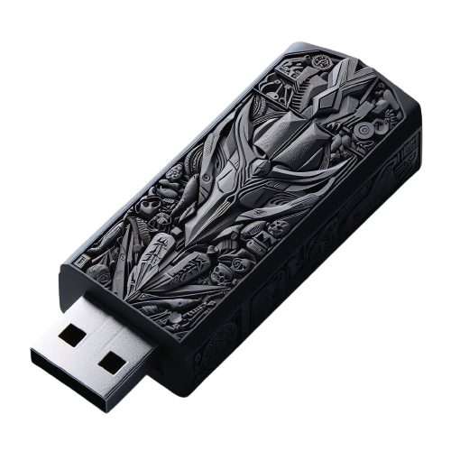

Repertório de Março à disposição, com uma vasta coleção de mais de 6 mil músicas, abrangendo tanto clássicos atemporais quanto lançamentos recentes. Faça o download para o seu celular ou computador e renove sua seleção musical no seu dispositivo portátil.
De R$ 37,99 por R$ 9,99 ou 2x de R$ 5,34 oferta de lançamento
Você está pronto para transformar seus momentos em experiências inesquecíveis? Apresentamos a você uma oportunidade única de possuir uma coleção musical incomparável, composta por mais de 6.000 músicas cuidadosamente selecionadas para enriquecer cada cena da sua vida.
Por que escolher a nossa coleção?
✨ Diversidade Sem Igual: De clássicos intemporais a batidas contemporâneas, nossa pasta abrange todos os gêneros imagináveis. Seja para relaxar em casa, animar uma festa ou mergulhar em uma jornada introspectiva, temos a trilha sonora perfeita para cada ocasião.
🎵 Qualidade Sonora Impecável: Cada faixa foi escolhida por sua qualidade excepcional de áudio. Desfrute de músicas cristalinas que elevam a experiência auditiva a novos patamares, proporcionando uma imersão total em cada nota.
🌟 Licença Comercial Inclusa: Além de enriquecer sua vida pessoal, esta coleção oferece uma licença comercial completa. Isso significa que você pode usá-la em vídeos, podcasts, projetos comerciais e muito mais, adicionando um toque profissional a cada empreendimento.
🚀 Atualizações Constantes: A música evolui, e nós também. Sua compra inclui acesso a futuras atualizações da coleção, garantindo que sua biblioteca musical esteja sempre à frente das tendências.
aça parte desta jornada musical hoje!
Cada nota, cada melodia, é uma oportunidade de criar memórias duradouras. Não deixe essa chance escapar. Adquira agora nossa coleção exclusiva de mais de 6.000 músicas e transforme sua experiência auditiva.
🎶 Descubra. Sinta. Viva a Música. 🎶
1 Conecte o cabo OTG ao celular e ao pendrive.
2 Abra o Gerenciador de Arquivos no celular.
3 Localize o pendrive no Gerenciador de Arquivos.
4 Navegue até a pasta desejada no pendrive.
5 Selecione e copie/mova os arquivos desejados.
6 Vá para a localização desejada no celular.
7 Cole os arquivos.
8 Desconecte o pendrive com segurança.
1 Conecte o cabo OTG ao celular e ao pendrive.
2 Abra o Gerenciador de Arquivos no celular.
3 Localize o pendrive no Gerenciador de Arquivos.
4 Navegue até a pasta desejada no pendrive.
5 Selecione e copie/mova os arquivos desejados.
6 Vá para a localização desejada no celular.
7 Cole os arquivos.
8 Desconecte o pendrive com segurança.